Basisvoorbeeld vaste vleugel¶
Een volledige doorloop voor een vliegtuig met motor + 2 rolroeren + 2 flaps + hoogteroer + richtingsroer, één servo per stuurvlak, van begin tot eind opgebouwd met de wizard. Voltooi eerst de Eerste zenderinstellingen.
Stap 1. Systeeminstellingen controleren¶
Dit voorbeeld gebruikt de standaard kanaalvolgorde AETR.
Stap 2. Bepaal de benodigde servo's/kanalen¶
Mixen vormt het hart van de zender — tot 100 mixkanalen, waarbij normaal gesproken de laagste nummers aan servo's worden toegekend (kanaalnummers komen namelijk direct overeen met de kanalen van de ontvanger; de interne RF-module van de X20 ondersteunt tot 24 uitgangskanalen). Hogere kanalen zijn vrij voor virtuele kanalen of extra echte kanalen via meerdere RF-modules en SBUS. Onze romp/vleugel:
| Functie | Kanalen |
|---|---|
| Motor | 1 |
| Rolroeren | 2 |
| Flaps | 2 |
| Hoogteroer | 1 |
| Richtingsroer | 1 |
(Het intrekbare landingsgestel wordt later toegevoegd, in Stap 10.)
Stap 3. Een nieuw model aanmaken¶

Kies in Modelkeuze een categorie, tik op + en start de wizard Airplane. Kies Non stabilized receiver voor dit voorbeeld.
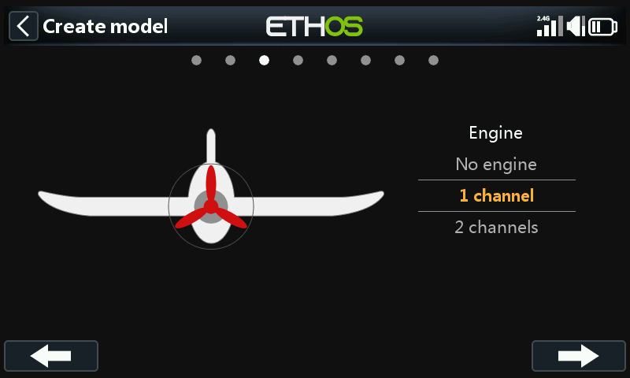

Accepteer 1 motorkanaal, daarna 2 rolroerkanalen en selecteer 2 flapkanalen.
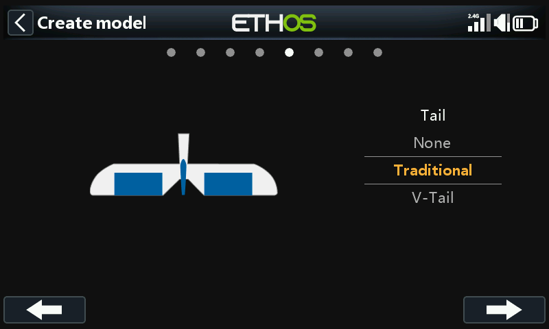
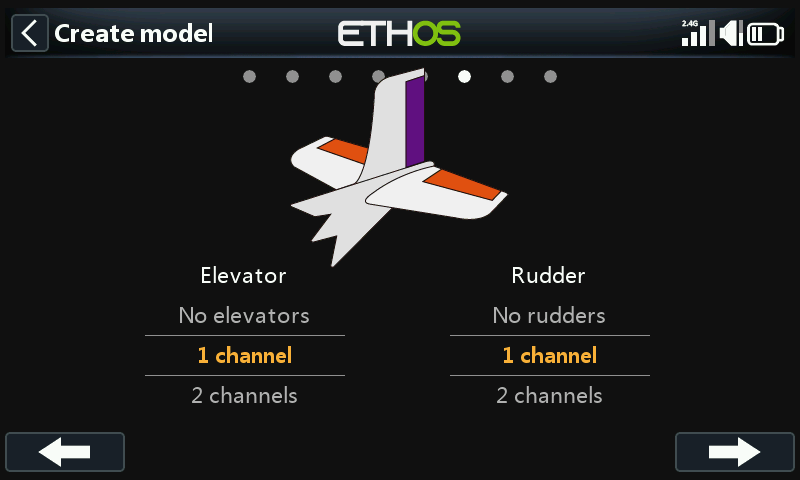
Accepteer de standaardinstelling Traditional Tail, met 1 hoogteroer- en 1 richtingsroerkanaal.
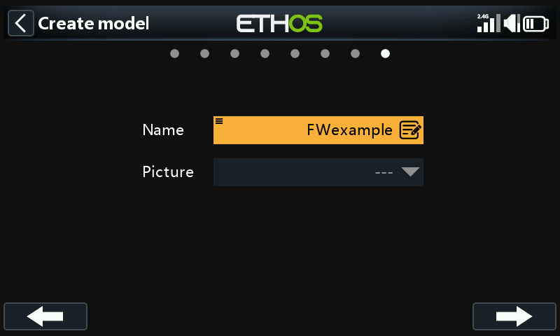
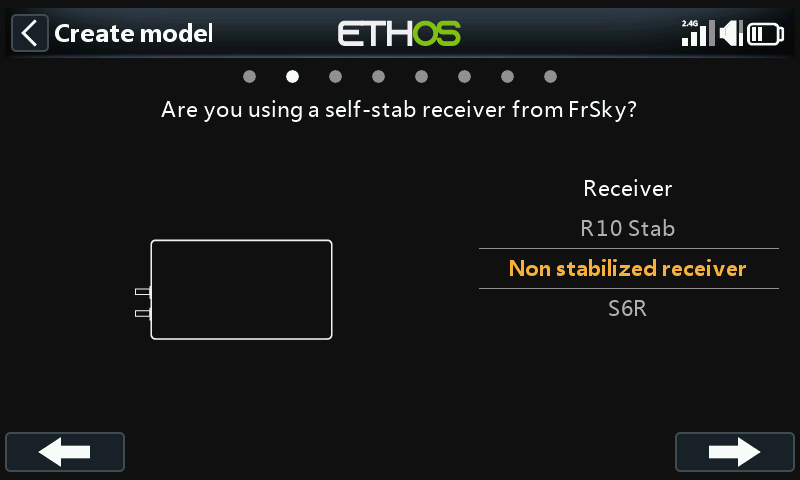
Geef het een naam (bijv. "FWexample" — maximaal 15 tekens), voltooi de wizard en het wordt het actieve model, aangemaakt in de categorie Airplane.
Stap 4. De mixen controleren en configureren¶

De wizard heeft de mixen voor rolroeren (kanalen 1 en 5), hoogteroer, gas,
richtingsroer en flaps al aangemaakt (bij de flaps staat --- — er is nog
geen bron toegekend).
Rolroeren¶
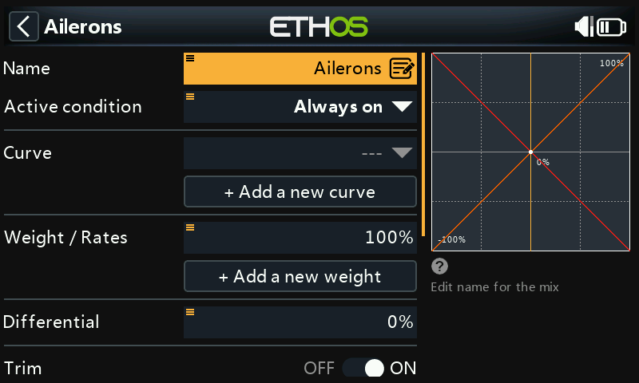
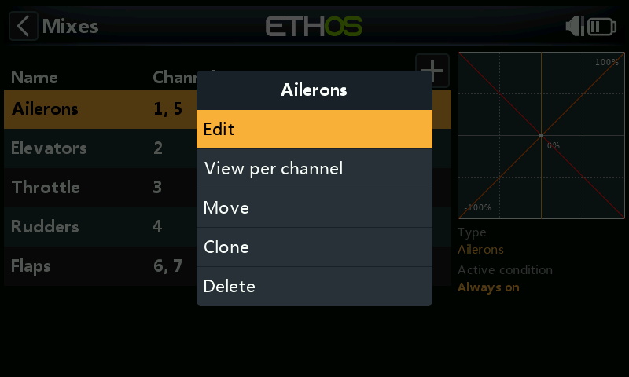
Weight/Rates — stel de rates in voordat je met iets nieuws vliegt: een bescheiden uitslag (bijv. 30%) is geschikt voor sportvliegen, de volle 100% voor 3D. Voeg een rate van 60% toe voor schakelaar SB midden en een rate van 30% voor SB omlaag — de standaardwaarde (SB omhoog) blijft 100%:
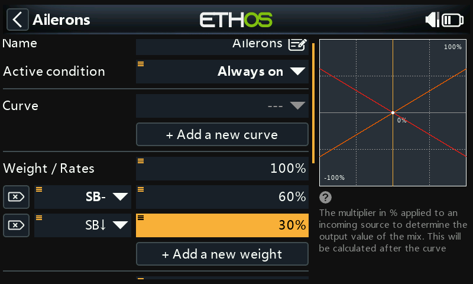
Expo — een lineaire reactie kan rond het midden nervous aanvoelen; voeg Expo-rates toe (bijv. 60%/40%/20% over dezelfde SB-posities) om de reactie rond het midden vlakker te maken zonder de maximale uitslag te verminderen:
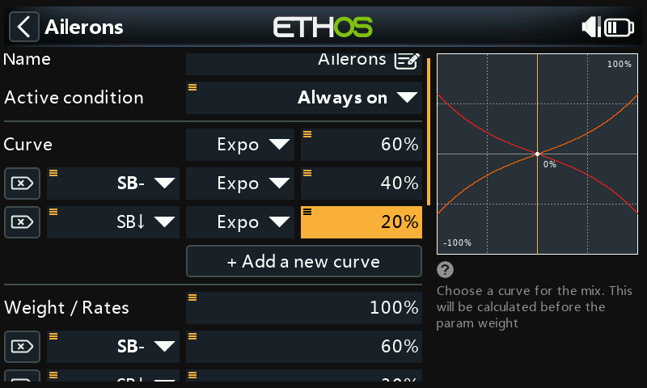
Differentieel — een gelijke rolroeruitslag omhoog en omlaag zorgt voor meer weerstand op het neerwaarts bewegende rolroer dan op het opwaarts bewegende, waardoor het model van de bocht af giert ("negatief gierkoppel"). Een positief differentieel (50% is gebruikelijk) vermindert de neerwaartse uitslag ten opzichte van de opwaartse om dit te compenseren:

Om het differentieel tijdens de vlucht af te stemmen: houd ENT lang
ingedrukt op de waarde, kies Use a source en selecteer Pot1:
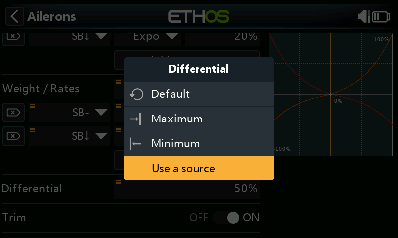
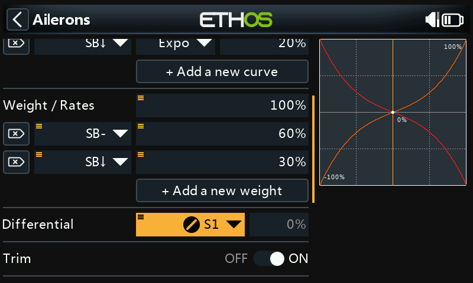
Ben je tevreden met de in de vlucht gevonden waarde, houd dan opnieuw lang ingedrukt en kies Convert to value om deze permanent vast te leggen:
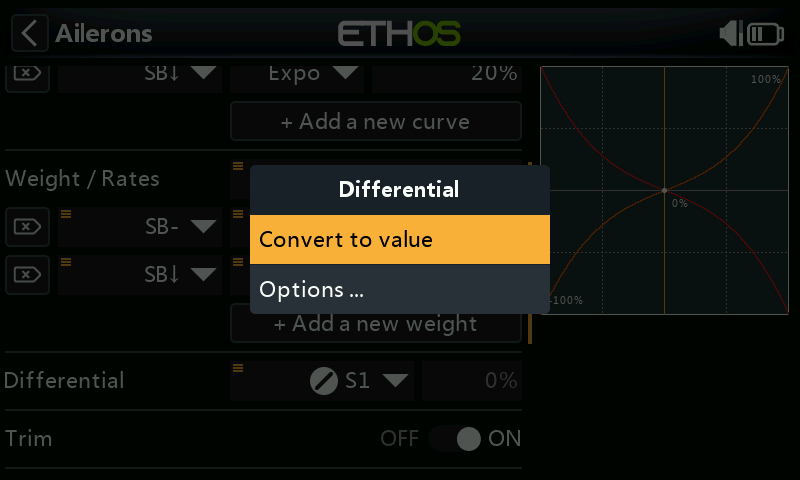
Trim — hiermee kan deze mix van de bijbehorende trim worden losgekoppeld zonder de trim zelf uit te schakelen, zodat deze voor een ander doel vrijkomt:
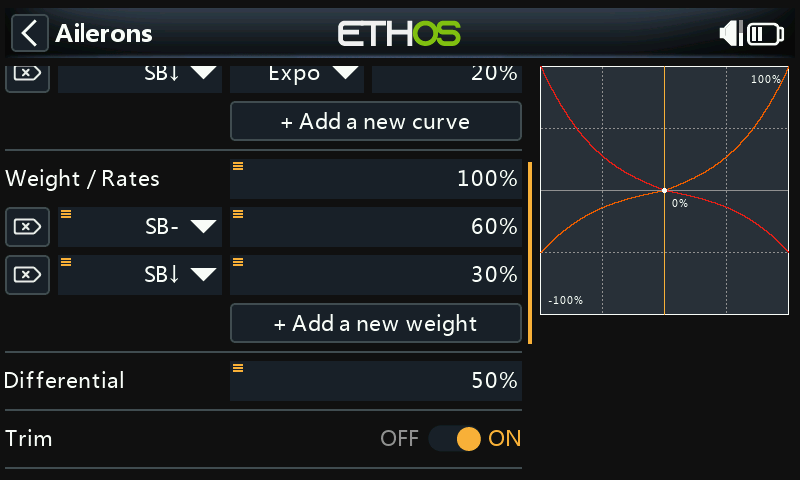
Hoogteroer en richtingsroer¶
Hetzelfde patroon met drie rates + Expo, hier op schakelaar SC:
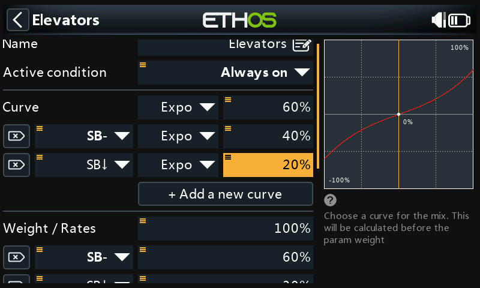
Gas¶
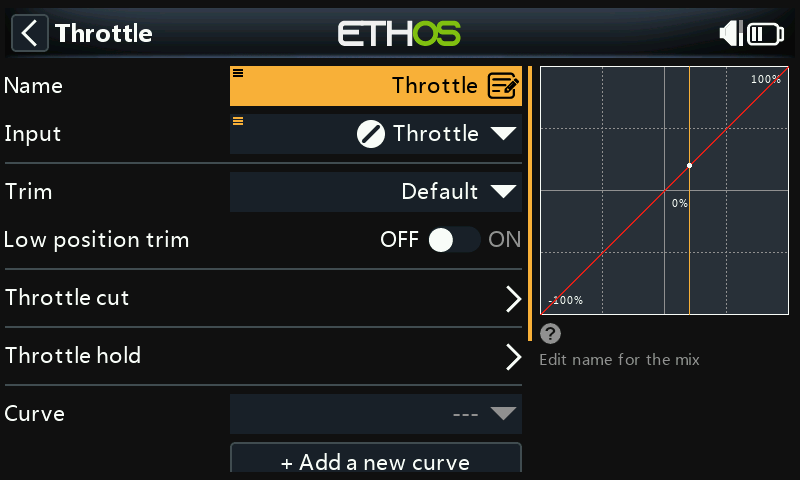
Laat de ingang op de gasstick staan — rates/Expo zijn niet nodig — maar een veiligheidsschakelaar is essentieel; een modelmotor die onverwacht aanslaat kan ernstig letsel veroorzaken.
Low position trim (gloeiplug-/benzinemotoren) — regelt het stationair toerental onafhankelijk van vol gas:
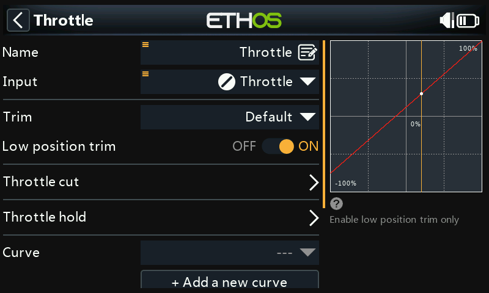
Als dit is ingeschakeld, staat het gaskanaal op −75% met de stick op stationair; de gastrimhendel regelt het stationair toerental dan tussen −100% en −50%.
Gas-afsnijding — een veiligheidsvergrendeling. Met schakelaar SA omlaag als actieve conditie (vet weergegeven wanneer actief) blijft de gasuitgang op −100% zodra de stick onder −85% komt:
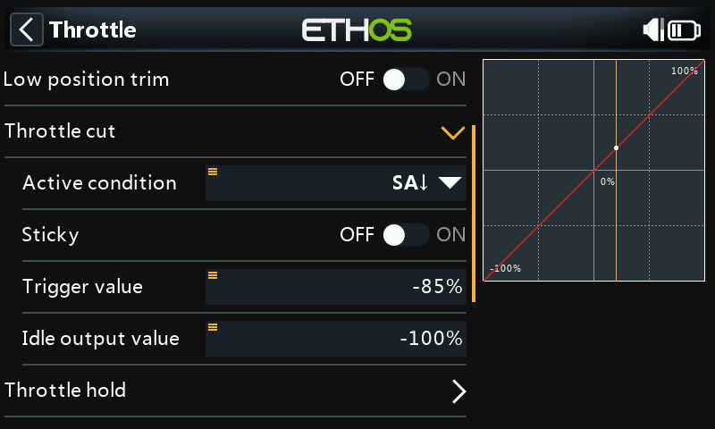
Is in plaats daarvan Sticky ingeschakeld, dan wordt het gas onmiddellijk afgesneden zodra SA omlaag gaat, ongeacht de stickstand:
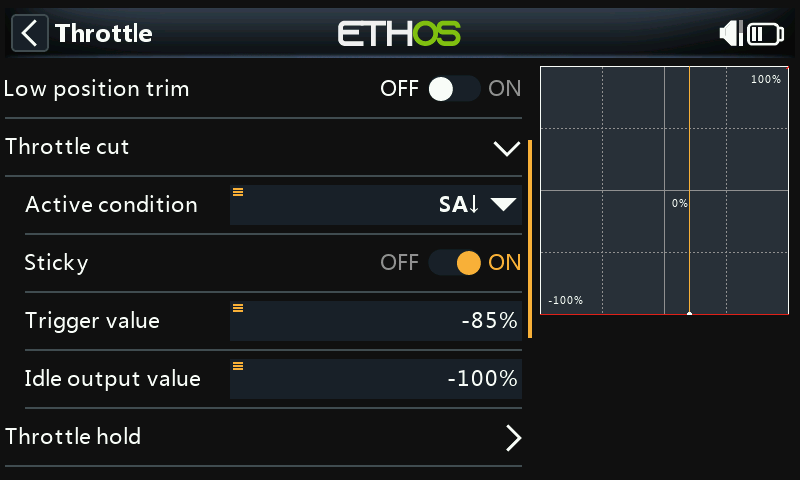
In beide gevallen moet, zodra de actieve conditie wegvalt, de stick eerst weer onder −85% worden gebracht voordat het gas weer kan toenemen — dit voorkomt dat de motor direct naar een hoge gasstand springt op het moment dat de afsnijschakelaar wordt vrijgegeven.
Gas vasthouden — een noodafsnijding vanuit elke stickstand, waarbij de uitgang direct naar −100% (of een ingestelde waarde) gaat zodra aan de conditie is voldaan:
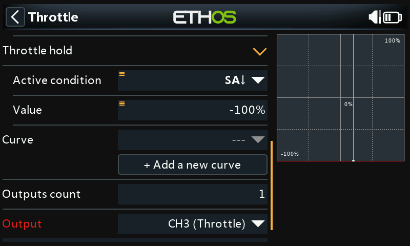
Flaps¶
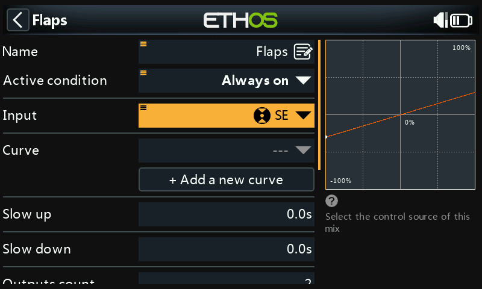
Ken de flaps toe aan schakelaar SE en zet de weight van beide uitgangskanalen op 100%:
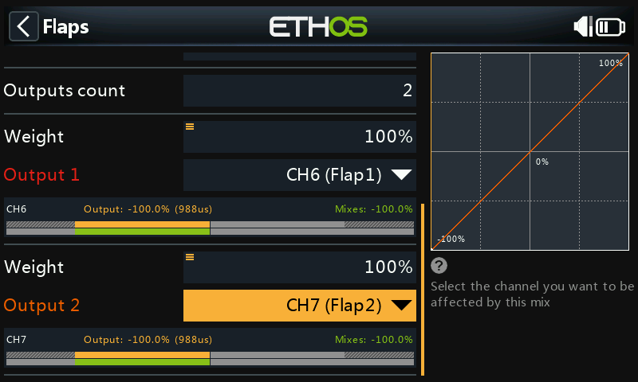
Stap 5. De ontvanger binden¶
Registreer (bij ACCESS) en bind via RF System. Overweeg voordat je verdergaat naar de Uitgangen om de servostangen los te maken of de servo-uitslag tijdelijk te verkleinen, om te voorkomen dat er iets wordt overbelast tijdens het instellen van de Min-/Max-limieten.
Stap 6. De uitgangen configureren¶
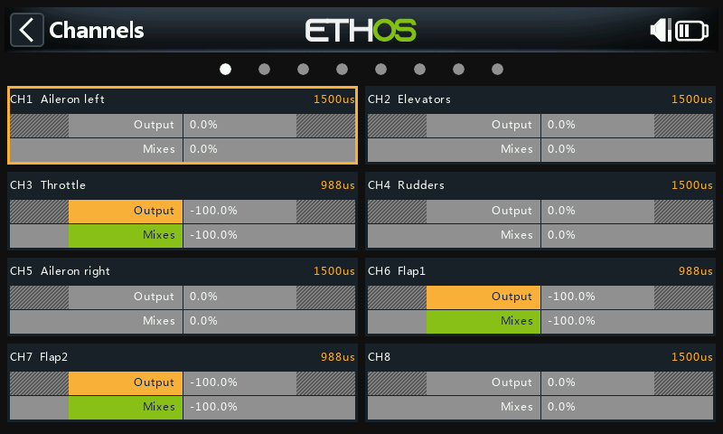
Uitgangen past de logica van de mixer aan de werkelijke mechanica van het model aan.
Rolroer 1 — centreer de servo met PWM center nadat de mechanische aansluiting is geoptimaliseerd, en stel daarna Min/Max in. Door tijdelijk een potentiometer aan Min (en daarna aan Max, op dezelfde manier als in het differentieelvoorbeeld hierboven) toe te kennen, is dit sneller af te stemmen:
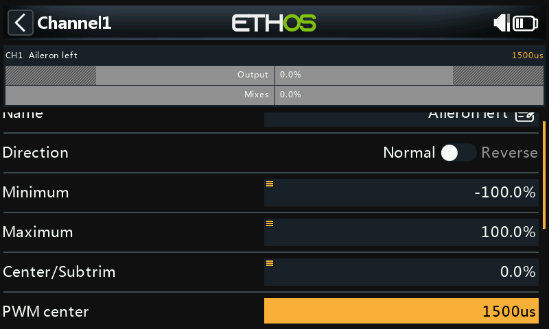
Flaps — flaps hebben doorgaans een grote neerwaartse uitslag nodig om effectief te remmen; lever daarvoor in de aansturing wat opwaartse uitslag in, zodat de flap bij servomidden half omlaag staat, en gebruik vervolgens Min/Max om de werkelijke stand voor "op" en "volledig omlaag" in te stellen. Een curve met 5 punten is een gebruikelijke manier om een eventuele afwijking in het samenlopen van flap en rolroer te corrigeren. Sluit af met Kanalen balanceren om de linker- en rechterrolroeren en flaps te synchroniseren.
Stap 7. Inleiding tot vluchtmodi¶
Met Vluchtmodi kan een model per taak eigen instellingen hebben — vergelijkbaar met schakelen. Van de 20 beschikbare modi gebruikt dit voorbeeld er drie: Default, Flaps Half (schakelaar SE midden) en Flaps Full (SE omhoog). De eerste vluchtmodus waarvan de conditie waar is, is actief; de modus Default heeft helemaal geen conditie en neemt over zodra niets anders van toepassing is — daarom heeft deze ook geen optie om een schakelaar te kiezen. Een fade in/out van 1 seconde maakt de overgang bij het uitzetten van de flaps vloeiend.
Stap 8. De trims configureren¶
Er zijn twee manieren om een hoogteroertrim te verwerken die met de flapstand varieert:
Onafhankelijke trims per vluchtmodus — de eenvoudigste optie: de hoogteroertrim wordt volledig onafhankelijk per vluchtmodus en schakelt automatisch mee wanneer SE beweegt. Omdat elke modus vanaf nul wordt getrimd, helpt Instant trim — trim eerst voor normale vlucht, land daarna en gebruik dat als uitgangspunt voor de flapmodi.
Basistrim met offset — één keer trimmen in Default, waarbij de hoogteroercompensatie van elke flapmodus daar als offset bovenop komt:
- Zet de trim-Step op Medium (voor sneller initieel trimmen; verlaag deze later voor fijnafstemming), Mode op Custom en voeg een nieuw gedrag toe.
- Active condition:
FM1(Flaps Half), modus Offset + Default — de trim voor Flaps Half wordt dan basistrim + de offset die wordt ingedraaid terwijl die modus actief is:
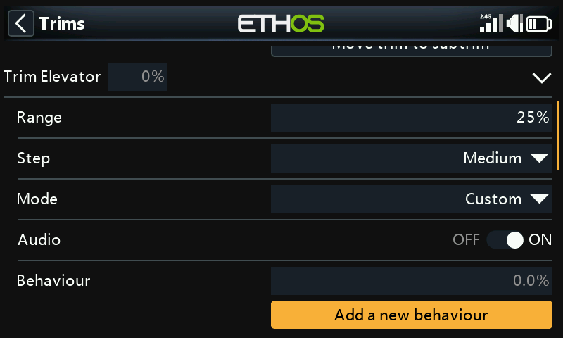
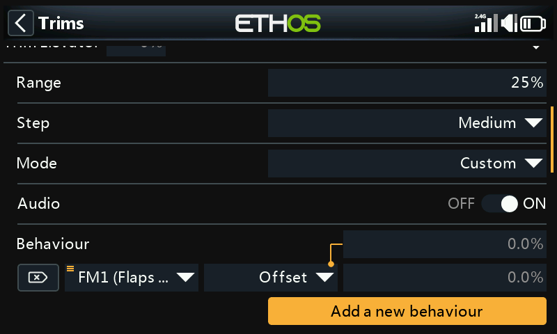
- Herhaal dit voor
FM2(Flaps Full):
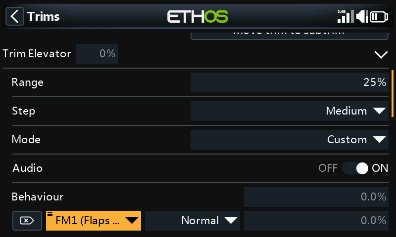
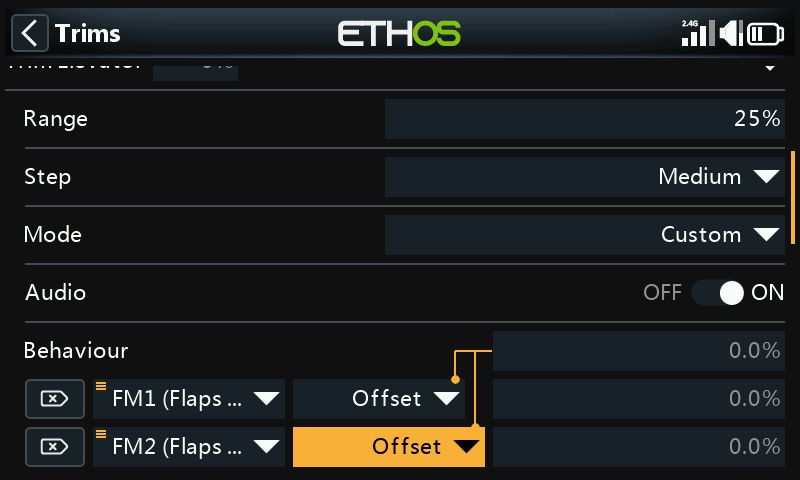
Elke flapmodus kan nu onafhankelijk worden getrimd, maar wanneer later de basistrim in Default wordt aangepast (bijv. om thermische drift van de servo te corrigeren), verschuiven beide flapmodus-trims automatisch met dezelfde waarde mee.
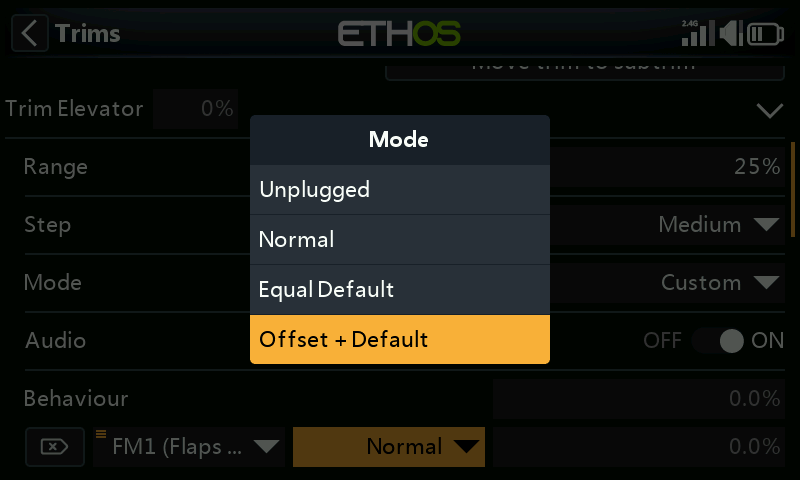
Stap 9. Een timer voor de vluchtaccu instellen¶
Bewerk in Timers Timer 1: modus Down, startwaarde 5 minuten, lopend zodra Throttle active waar is (en niet in reset gehouden). Ken eventueel een proportionele tijdbron toe (bijv. de gasstick), zodat de timer bij vol gas op werkelijke snelheid loopt en langzamer gaat wanneer het gas wordt verminderd.
Stap 10. Een mix voor het intrekbare landingsgestel toevoegen¶
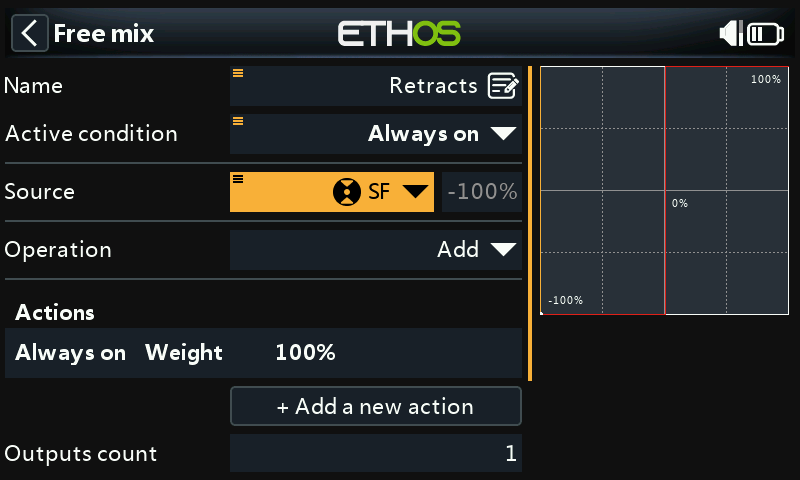
Tik op een mix, Add Mix → Free Mix, geef deze de naam "Retracts", zet de conditie op Always en de bron op schakelaar SF. De standaardactie Weight = 100% is prima — hiermee wordt bijv. kanaal 8 aan het intrekbare landingsgestel toegekend: